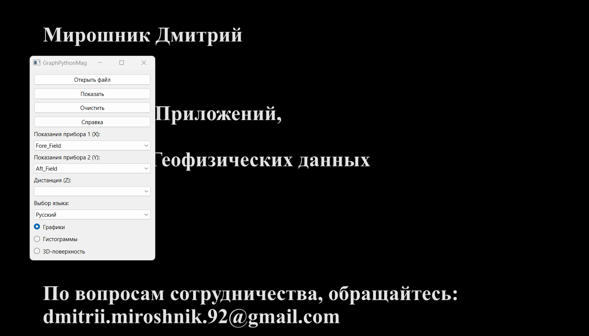

これはさまざまな地球物理データを表示するアプリです。
それはグラフ、ヒストグラム、および印刷品質の 3D サーフェスを生成する機能が実装されています。
入力データは、拡張子が 'CSV' のファイルに保存された任意の数値データである可能性があります。
- 元の CSV ファイルを見つけて開くには、「開く」ボタンをクリックします。

- 適切なデータを選択するには、ドロップダウンメニューを使用します。

- データをクリアするには、「クリア」ボタンをクリックします。

- グラフを生成するには、「表示」ボタンをクリックします。

- インターフェースの言語を変更するには、「言語の選択」ドロップダウンメニューから利用可能な言語の1つを選択します。

- 質問がある場合は、「ヘルプ」ボタンをクリックしてヘルプを求めることができます。
 シンプルなグラフの生成には、科学グラフライブラリ Matplotlib を使用します。
以下は、アプリで実装されているグラフの種類です：
シンプルなグラフの生成には、科学グラフライブラリ Matplotlib を使用します。
以下は、アプリで実装されているグラフの種類です：
- シンプルなグラフ。シンプルなグラフを生成するには、2つの列のいずれかの値を選択します："デバイス1の読み取り" または "デバイス2の読み取り"。

- 組み合わせグラフ。2つのデバイスの読み取りを比較するには、2つの列の値を選択します："デバイス1の読み取り" と "デバイス2の読み取り"。

- 距離に関連するグラフ。距離に応じて異なるグラフの種類を組み合わせることもできます。これを実現するには、"距離" ドロップダウンメニューから距離チャンネルの値を選択します。

正規分布のヒストグラムを生成するには、Matplotlib の拡張機能である Seaborn ライブラリを使用します。
以下は、アプリで実装されている正規分布の表示の種類です：
- シンプルなヒストグラム、正規分布のグラフと組み合わされています。生成するには、2つの列のいずれかの値を選択します："デバイス1の読み取り" または "デバイス2の読み取り"。

- 組み合わせヒストグラム。読み取りを比較するために、2つの列の値を選択します："デバイス1の読み取り" と "デバイス2の読み取り"。

- 距離に関連する値の分布。距離に応じて異なる表示の種類を組み合わせることもできます。これを実現するには、"距離" ドロップダウンメニューから距離チャンネルの値を選択します。
 科学グラフィックの表示ウィンドウである Matplotlib ウィンドウでは、次のような操作ができます：
科学グラフィックの表示ウィンドウである Matplotlib ウィンドウでは、次のような操作ができます：
- グラフのドラッグ;
- スケーリング;
- 表示領域の移動;
- 軸ラベルの変更;
- 色の変更;
- 選択した形式でグラフを保存など。
 3D サーフェスを生成するには、Plotly ライブラリを使用します。
サーフェスを生成するには、X、Y、および Z のすべての列を選択してください。 !!!すべての座標は直交座標系内にある必要があります!!!
3D サーフェスを生成するには、Plotly ライブラリを使用します。
サーフェスを生成するには、X、Y、および Z のすべての列を選択してください。 !!!すべての座標は直交座標系内にある必要があります!!!
 3D サーフェス表示ウィンドウでは、次のような操作ができます：
3D サーフェス表示ウィンドウでは、次のような操作ができます：
- ドラッグ;
- スケーリング;
- 回転;
- データの読み取り;
- 選択した形式で画像を保存など。
 このアプリケーションは、任意の CSV ファイルで動作します。しかし、このプログラムは AO "Южморгеология" の要求に基づいて作成されたため、
OasisMontaj データベースを操作する方法を見ていきます。以下は、OasisMontaj 環境での CSV ファイルへのエクスポート手順です：
このアプリケーションは、任意の CSV ファイルで動作します。しかし、このプログラムは AO "Южморгеология" の要求に基づいて作成されたため、
OasisMontaj データベースを操作する方法を見ていきます。以下は、OasisMontaj 環境での CSV ファイルへのエクスポート手順です：
- Database / Export / CSV など...;
- 保存パラメーターを選択します;
- 「OK」をクリックします。
 GraphPythonMag v 1.2.1
GraphPythonMag v 1.2.1
著者：ミロシュニク ドミトリー
- アプリケーション開発
- ウェブデザイン
- 地球物理データ処理
協力のお問い合わせ先：dmitrii.miroshnik.92@gmail.com。
また、著者に感謝することもできます。
サポートとフィードバックを提供することを嬉しく思います！